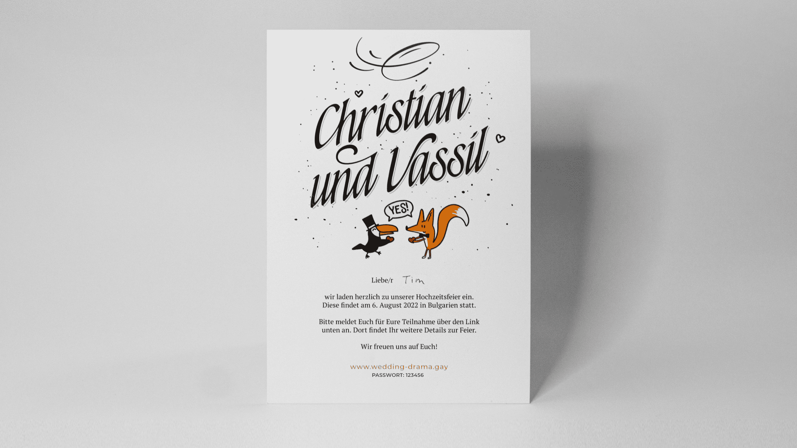

Wedding Invitation
Marrying the person you love is amongst the most beautiful experiences one can possibly have. For your special day, everything should feel perfect – and that includes the way you announce your wedding to your friends and family.
For this project, I developed a warm and happy visual style by combining typography and illustration to form a unique appearance.
The calligraphic letters used in the headline are derived from a custom font I designed. The tucan and the fox act as the wedding mascots and give all the visuals an especially cute touch.